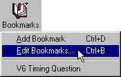
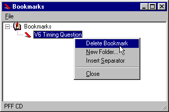
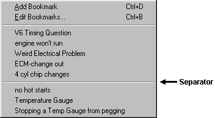
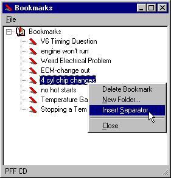
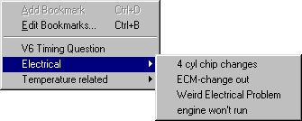
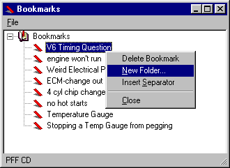
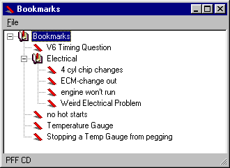

4.2 Editing Bookmarks
To edit (delete, rearrange) bookmarks, click the Bookmark button and choose
"Edit Bookmarks":

From within the Bookmark Edit Window that appears, you can delete bookmarks,
rearrange bookmarks, add folders or add separators. To delete a bookmark or bookmark-folder,
right click the bookmark and choose "Delete Bookmark":

If you have a lot of bookmarks, you can separate groups of bookmarks with a separator:

To add a separator, right click the bookmark you wish to add a separator after, and
choose "Insert Separator":

You can also add Bookmark Folders that will appear as submenus in your Bookmark Menu.
Bookmark Folders are convenient for grouping several related threads:

To create a Bookmark Folder, right click the bookmark you wish to add a folder after,
and choose "New Folder":

A new folder will be added and you can now enter the Folder Name. To add bookmarks to
this folder, first open the folder by double clicking it. The folder's icon will
change from to . Next, drag and drop the bookmark
you wish to add to this folder:

Note that when a folder is closed, a Bookmark Folder is handled like an ordinary bookmark.
For instance, if you drag and drop a bookmark on a closed folder, the bookmark is not
placed inside the folder, but after it. Similarly, if you right click on a
closed folder and choose "New Folder", the new folder will be created after the existing
folder, otherwise a new folder would be created inside the existing folder.